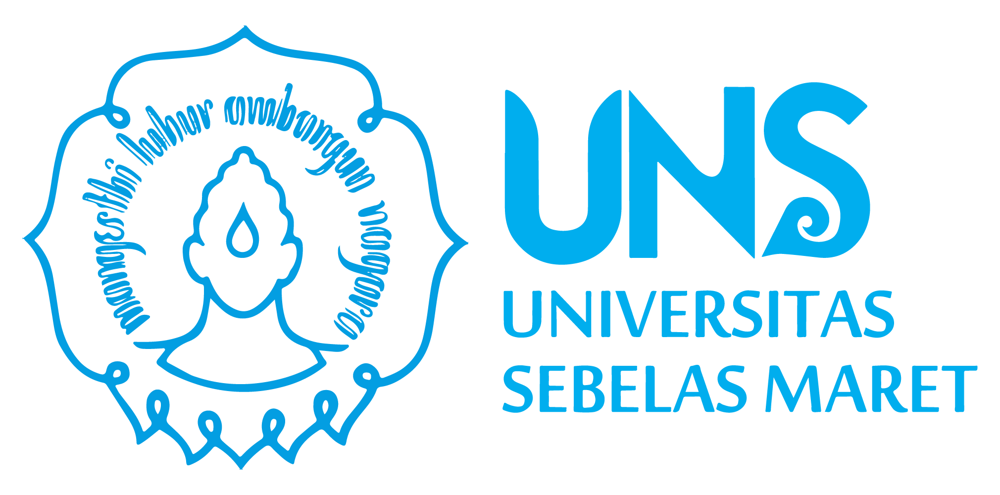
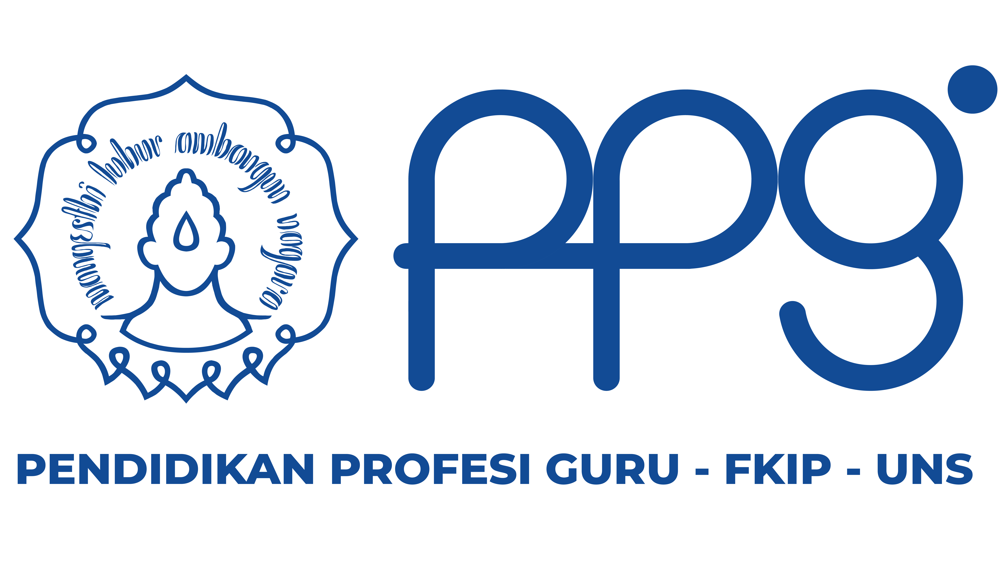
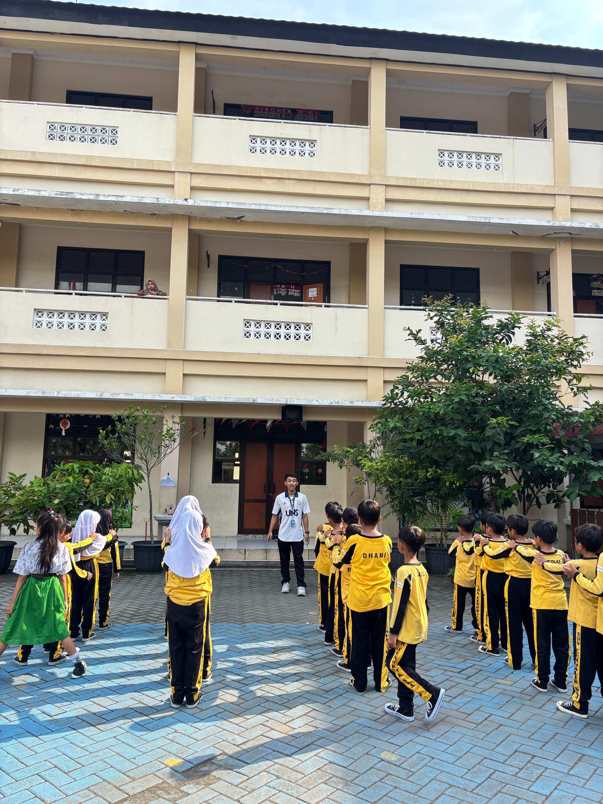
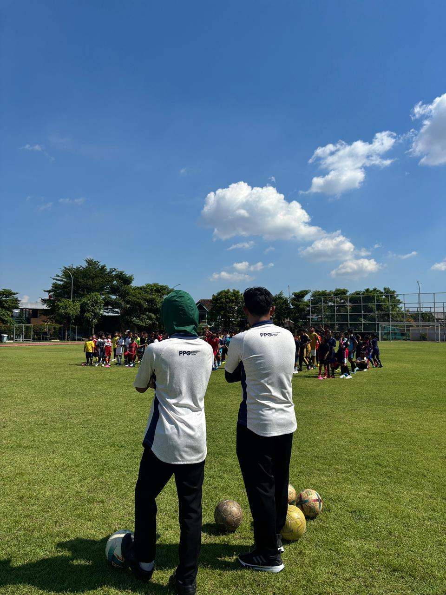
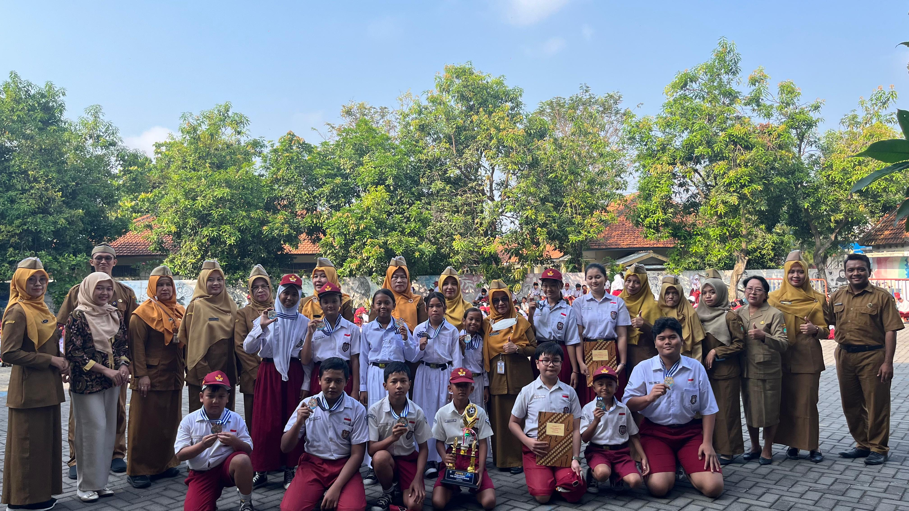
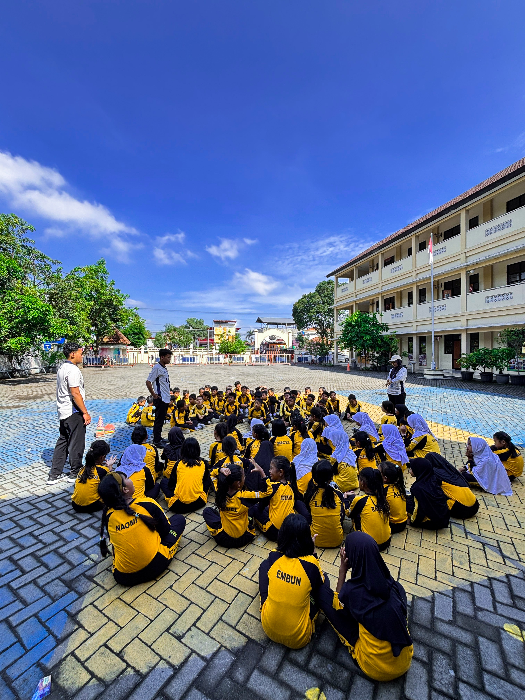
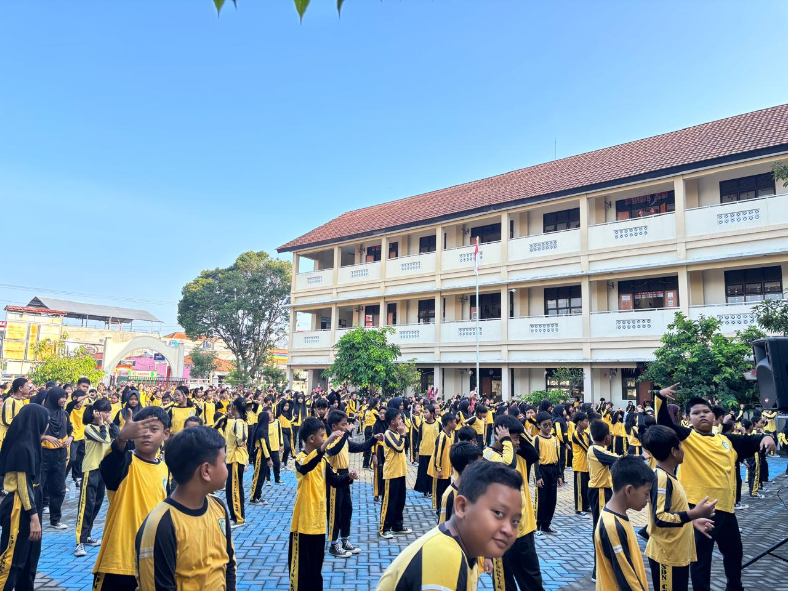
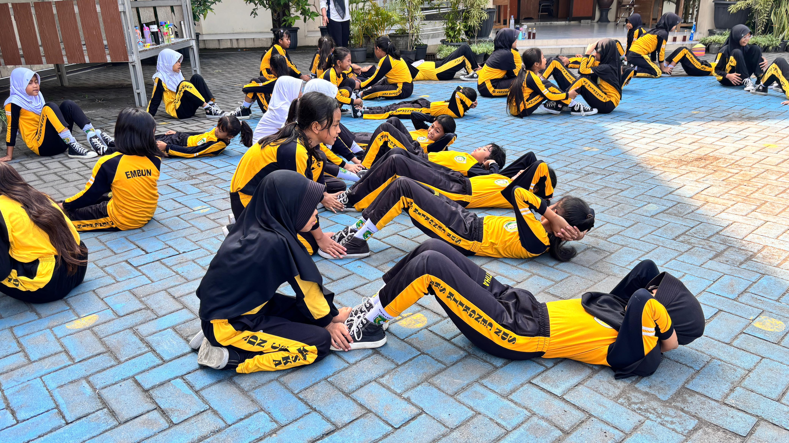

Perjalanan menjadi guru profesional yang inspiratif dan berkarakter
Jalan Ir. Sutami No.36A, Kentingan, Jebres, Kota Surakarta, Jawa Tengah 57126
Jl. Letjen Sutoyo No.16, Nusukan, Kec. Banjarsari, Kota Surakarta, Jawa Tengah 57135
NIM: X94250100269
Asal Daerah
Saya adalah mahasiswa PPG Prajabatan Jurusan PJOK yang berasal dari daerah yang kaya akan budaya dan potensi olahraga. Keunikan daerah saya terletak pada...
Inspirasi saya untuk menjadi guru profesional dimulai dari pengalaman pribadi dan keinginan untuk memberikan dampak positif bagi generasi muda...
"Pendidikan adalah senjata paling ampuh yang bisa Anda gunakan untuk mengubah dunia" - Nelson Mandela
Dokumen perencanaan pembelajaran yang komprehensif untuk setiap siklus PPL Terbimbing
Lihat DetailKumpulan media pembelajaran inovatif untuk mendukung proses belajar mengajar PJOK
Lihat DetailPenilaian komprehensif terhadap perancangan perangkat pembelajaran yang telah disusun selama PPL Terbimbing.
Note. File Asli Lampiran 7 & 8 dapat diakses pada Penilaian Guru Pamong di bagian Artefak Produk Pembelajaran.
Evaluasi praktik mengajar yang dilakukan selama 3 siklus PPL Terbimbing.
Fokus pada manajemen kelas dan pembukaan pembelajaran
Peningkatan dalam variasi mengajar dan evaluasi
Mastery dalam implementasi pembelajaran dan refleksi
Menjadi guru PJOK yang tidak hanya mengajarkan teknik olahraga, tetapi juga membentuk karakter siswa melalui nilai-nilai sportivitas, disiplin, dan kerjasama.
Mampu merancang pembelajaran yang inovatif dan sesuai dengan kebutuhan siswa
Menjadi teladan dalam disiplin, sportivitas, dan semangat never give up
Mampu berkomunikasi efektif dan membangun hubungan positif dengan siswa
Terus mengembangkan diri dan mengikuti perkembangan dunia olahraga





